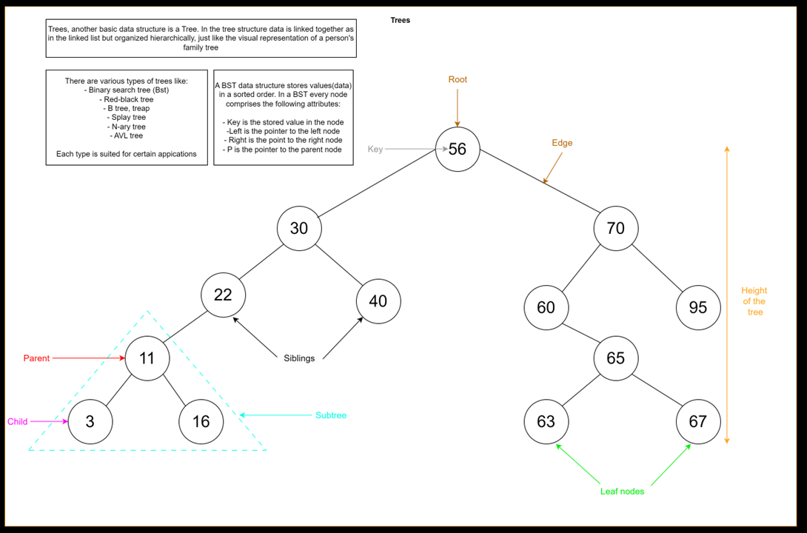
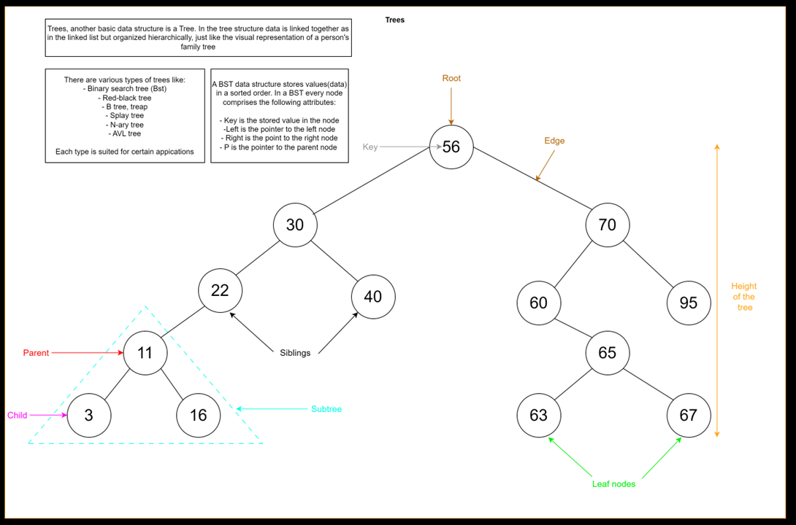

About Me
Hello, my name is Jeroen Vos. I am 21 years old and I live in the Netherlands. Since I was a child, I have always been very creative. I loved to draw, play games, make my own toy guns and toy planes from wood, and much more. I have always been a quick learner, but that also made learning quite hard for me because I got bored very quickly if I understood a subject.
Because of this creativity, the decision to pursue a study related to that was easily made. In August of 2020, I started "Creative Craftsman," a study that involved woodworking, making your own furniture, furniture schematics, and making 3D models on your computer. The study also included some entrepreneurship and business classes. These drew my attention because my father had always had his own company, and I wanted to do the same.
However, I soon realized that at that moment, school and studying were not the right fit for me. So I quit and started working some simple jobs to keep myself occupied. But that was also not the best use of my time. In August 2021, I started the study "Junior Accountant." This study interested me because of the traveling, communication with people/businesses, and the IT-related classes.
But similar to my previous study, I couldn't find joy in learning something I thought I could learn much better and faster on my own. So I quit, again. This time, I almost immediately started working at a landscaping company. I did that for about 6 months, and after that, I started my own company with a friend of mine. This company lasted exactly one year, as we both decided to go our separate ways. Even though the business went well, we both had different perspectives on our future.
After that, I had two more jobs, one as a car detailer and one in flooring. However, every day I felt like I was missing something. I was getting bored again because I felt like I had already learned everything there was to learn. I didn't know what I wanted, so I started looking for something that would fit my interests.
And that's when I found it. I came across a video about replacing gaming with coding. It immediately sparked my interest. It looked complex, and I didn't understand any of it. But that was exciting for me, strangely. I started to immerse myself in the world of IT and soon discovered that this is where I belong. I have been studying non-stop for the last 3 months, and I am still not sure what everything means or does. I learned Python and through that, the basics of programming through a Harvard course. After that, I started learning Azure, Docker, GitHub, and much more.
As of right now, I am very excited to dive even deeper into the world of IT. So I am actively searching for internships or jobs so I can learn everything to be functional in a company.
My Future Plans
I am planning on studying IT through a part-time education at the HanzeHogeSchool Groningen. This is an "HBO" (University of Applied Sciences) study. To be allowed to enter this study, I have to take three tests to see if I am capable of studying at this level. These tests will take place in March 2024. For these tests, I am also getting certificates. I am also studying for the Microsoft AZ-900 test, or Azure Fundamentals if you will. I want to certify myself with AZ-900 so I can prove I understand the basics of working in and from the cloud and a cloud service. I am planning on getting many more certificates. I want to learn more languages like German (I still know some from school), Italian, Greek, and Spanish, to name a few. I want to keep learning for as long as I can because that is what drives me. As soon as I have the feeling I understand and know it all, I will get bored very quickly. But I know for a fact that will never be the case in IT.
Why this portfolio
I made this portfolio in the first instance to see how HTML and JS etc. worked. But right now i am really trying to show who i am and what i want to become. I am very passionate about this line of work and cant wait until i have my first job or internship.


 Azure Fundamentals
Azure Fundamentals
 Python
Python


 
